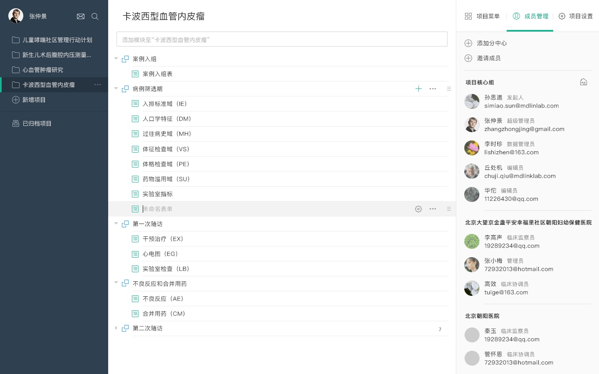
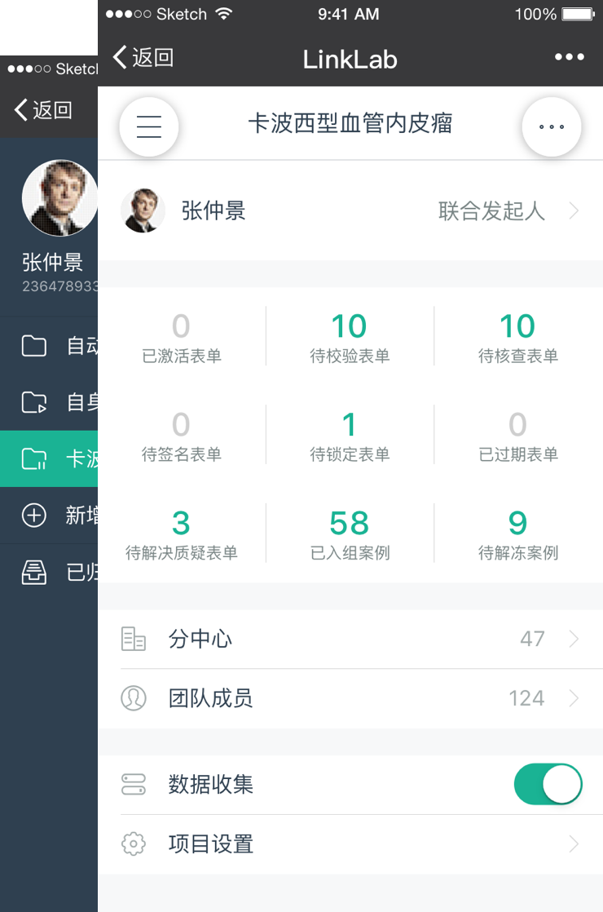
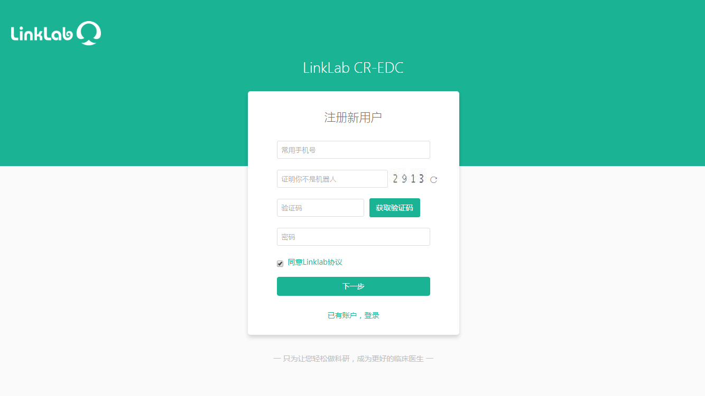

专为临床科研打造的管理系统，符合研究者的科研习惯，极易学习和使用。只需记1个URL、用户名和密码，即可访问所有研究项目。无需安装任何特殊的硬软件，您便可以在Web或手机上顺利运行；可以使用Firefox、Safari、Chrome或IE浏览器浏览网页。提供一整套的本地化/ 在线课程培训，并提供评估工具。项目方可要求每一个进入项目的角色接受相应的培训，并完成在线评估。
DIY 科研项目
无需IT，就能快速、直观的构建临床科研项目；可以DIY编辑研究项目以满足项目特殊要求；也可以利用和修改CDASH标准模版或同行共享的项目进行创建。
多端数据录入
人性化数据录入界面、分模块分表单呈现形式，帮助快速定位数据点；支持 Web/微信端同步录入，同时满足多种数据格式和逻辑跳转，让数据收集更高效智能。
预设科研任务
基于临床试验流程需求，提供（联合）发起人、编辑者、CRA、CRC、DM和研究者等多种角色，可以通过设置流程满足您对用户与数据、用户间的相互影响的预期。
实时监查病例
强大的答案校验和双录功能，系统即完成大部分逻辑校验；全套查询和稽查功能，在聊天中完成数据监查和修正；痕迹管理让数据全场可追踪，真实无虚假。
平台统计分析
菜单式的在线统计功能，支持常用的描述性分析和差异性分析（t检验、方差检验、单因素线性回归等）；一键生成统计结论和图表，用于数据展示和论文发表。
标准格式导出
一键导出功能让数据的导出和录入一样轻松；多种数据形式的导出兼容所有统计软件；甚至可根据当前分析的需求，自定义筛选所需的病例进行查看、导出和打印。
案例部分图片展示


